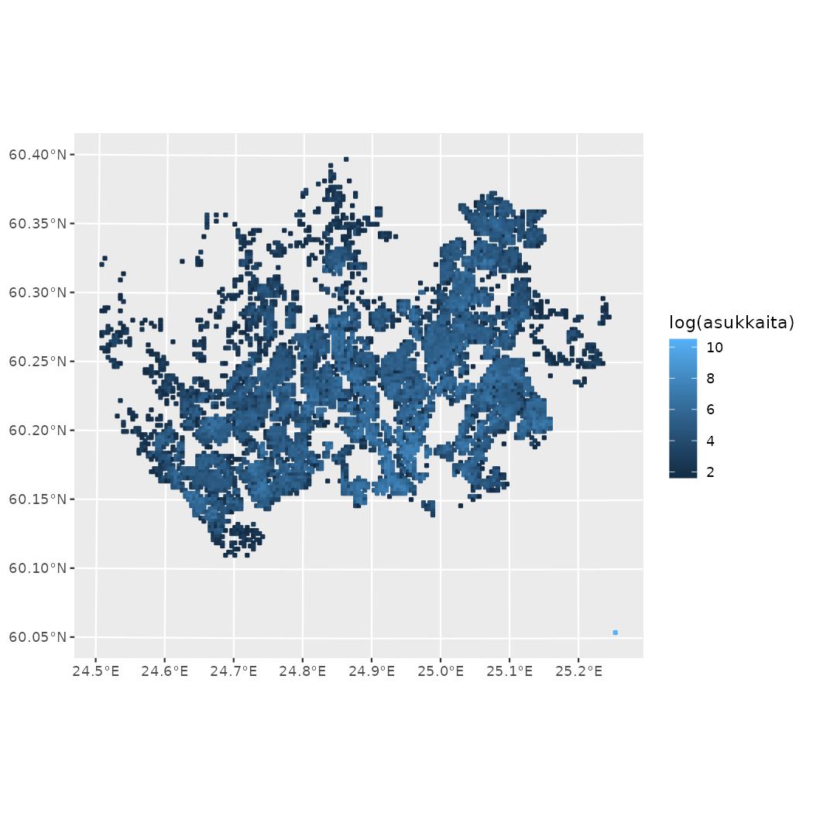
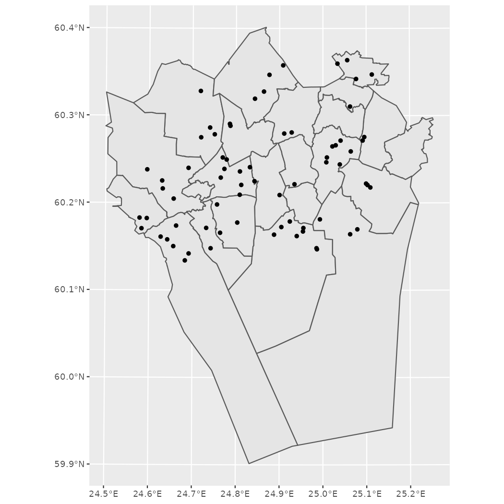

vignettes/helsinki_tutorial.Rmd
helsinki_tutorial.Rmdhelsinki R package provides tools to access open data from the Helsinki region in Finland.
For contact information, source code and bug reports, see the project’s GitHub page. For other similar packages and related blog posts, see the rOpenGov project website.
Release version for most users:
install.packages("helsinki")Development version for developers and other interested parties:
library(remotes)
remotes::install_github("ropengov/helsinki")Load the package.
The package has basic functions for interacting with WFS APIs, courtesy of FMI2-package: wfs_api() for returning “wfs_api” and to_sf() for turning these objects to sf-objects.
All available features of a given API can be easily listed with the get_feature_list() function. Partly due to legacy considerations, partly due to user convenience we often use HSY API url in these function examples, sometimes even as a default option. The API functions can, however, be used with a wide variety of different base.url parameters.
url <- "https://kartta.hsy.fi/geoserver/wfs"
hsy_features <- get_feature_list(base.url = url)
feature_of_interest <- hsy_features$Name[20]
# Location of waterposts
feature_of_interest
#> [1] "vesihuolto:HSY_vesipostit_2014"When the wanted feature and its Name (in other words: Namespace:Title combination) is known, it can be downloaded with get_feature() by providing the correct base.url and the Name as the typename parameter.
# downloading a feature
waterposts <- get_feature(base.url = url, typename = feature_of_interest)
# Visualizing the location of waterposts
plot(waterposts$geom)Dots on a blank canvas do not make much sense and therefore helsinki-package has get_city_map() function for downloading city district boundaries. An example of this is provided in the Helsinki region district maps section of this vignette.
Helsinki-package provides an easy-to-use menu-driven select_feature() function that effectively combines get_feature_list() and get_feature(). At default it only returns the Name of the wanted function, but if get parameter is set to TRUE, it returns an sf_object which can be easily visualized.
# Standard use
selected_feature <- select_feature(base.url = url)
feature <- get_feature(base.url = url, typename = selected_feature)
# Skipping a redundant step with parameter get = TRUE
feature <- select_feature(base.url = url, get = TRUE)The above example shows a general use case which can easily be applied to Helsinki Region Environmental Services (HSY) WFS API as well as other service providers’ APIs.
For legacy reasons, helsinki-package has also some specialized functions that aim to make downloading often used data as easy as possible.
Specifically, there are two new functions that replace deprecated functionalities from get_hsy() function: get_vaestotietoruudukko() (population grid) and get_rakennustietoruudukko() (building information grid). As of writing, years 2015 to 2019 are supported but the API may be updated at any time and get_feature_list() can be used to download datasets that are not baked into these functions.
pop_grid <- get_vaestotietoruudukko(year = 2018)
building_grid <- get_rakennustietoruudukko(year = 2016)
library(ggplot2)
# Logarithmic scales to make the visualizations more discernible
ggplot(pop_grid) + geom_sf(aes(colour=log(asukkaita), fill=log(asukkaita)))
While easy enough to build, specialized functions such as these are probably not something that power users want to rely on in their work flows. They also add more manual phases to package maintenance and therefore are probably not the direction we’re heading in the future. If you feel differently about this and there is a dataset that gets a lot of use, feel free to drop us a suggestion in GitHub.
Function get_servicemap() retrieves regional service data from city of Helsinki Service Map API, that contains data from the Service Map.
# Search for "puisto" (park) (specify q="query")
search_puisto <- get_servicemap(query="search", q="puisto")
# Study results: 47 variables in the data frame
str(search_puisto, max.level = 1)
#> List of 4
#> $ count : int 2130
#> $ next : chr "https://api.hel.fi/servicemap/v2/search/?page=2&q=puisto"
#> $ previous: NULL
#> $ results :'data.frame': 20 obs. of 47 variables:We can see that this search returns a large number of results, over 2000. The results are returned as pages, where each page has 20 results by default. By giving no additional search parameters, we get 20 results from the first page of search results.
# Get names for the first 20 results
search_puisto$results$name$fi
#> [1] "Sinebrychoffin puiston yleisövessa"
#> [2] "Sibeliuksen puiston yleisövessa"
#> [3] "Töölönlahden puisto / Leikkipaikka"
#> [4] "Esplanadin puiston WLAN-tukiasema"
#> [5] "Hesperian puiston yleisövessa"
#> [6] "Topeliuksen puiston yleisövessa"
#> [7] "Sibeliuksen puiston yleisövessa"
#> [8] "Pysäköintilippuautomaatti 334, Castreninkatu, puisto, korttimaksu"
#> [9] "Pysäköintilippuautomaatti 132, Merimiehenkatu, puisto, korttimaksu"
#> [10] "Pysäköintilippuautomaatti 88, Pengerkatu, puisto, kolikkomaksu"
#> [11] "Shakkilauta, Von Glanin puisto"
#> [12] "Matti Heleniuksen puiston yleisövessa"
#> [13] "Shakkilauta, Katri Valan puisto"
#> [14] "Tove Janssonin puiston yleisövessa"
#> [15] "Ala-Malmin puisto"
#> [16] "Pyhän Birgitan puisto"
#> [17] "Everstinpuisto"
#> [18] "Kirkkojärvenpuisto"
#> [19] "Lehtikaskenpuisto"
#> [20] "Leppäviidanpuisto"
# See what kind of data is given for services
names(search_puisto$results)
#> [1] "id" "connections"
#> [3] "entrances" "accessibility_properties"
#> [5] "identifiers" "department"
#> [7] "root_department" "provider_type"
#> [9] "organizer_type" "contract_type"
#> [11] "is_active" "deleted_at"
#> [13] "organizer_name" "organizer_business_id"
#> [15] "picture_url" "picture_entrance_url"
#> [17] "streetview_entrance_url" "description"
#> [19] "short_description" "name"
#> [21] "street_address" "www"
#> [23] "address_postal_full" "call_charge_info"
#> [25] "picture_caption" "phone"
#> [27] "fax" "email"
#> [29] "accessibility_phone" "accessibility_email"
#> [31] "accessibility_www" "created_time"
#> [33] "address_zip" "data_source"
#> [35] "extensions" "last_modified_time"
#> [37] "accessibility_viewpoints" "root_service_nodes"
#> [39] "municipality" "service_nodes"
#> [41] "services" "keywords"
#> [43] "location" "accessibility_shortcoming_count"
#> [45] "sort_index" "object_type"
#> [47] "score"More results could be retrieved and viewed by giving additional search parameters.
search_puisto <- get_servicemap(query="search", q="puisto", page_size = 30, page = 2)
search_puisto$results$name$fi
#> [1] "Kaupungintalon puisto"
#> [2] "Ankkuripohjanpuisto"
#> [3] "Kuttulammenpuisto"
#> [4] "Rinkelipuisto"
#> [5] "Olarin asukaspuisto"
#> [6] "Perkkaan asukaspuisto"
#> [7] "Alli Tryggin puiston opaskoira-aitaus"
#> [8] "Leppävaaran asukaspuisto"
#> [9] "Matinkylän asukaspuisto"
#> [10] "Hurtigin puisto"
#> [11] "Nurmilinnunpuisto"
#> [12] "Ruusutorpanpuisto"
#> [13] "Tynnyripuisto"
#> [14] "Karakallion asukaspuisto"
#> [15] "Asematien leikkipuisto"
#> [16] "Stenbergin puisto"
#> [17] "Veijarivuoren puiston talviuintipaikka (Humaus ry)"
#> [18] "Suvelan asukaspuisto"
#> [19] "Kasavuoren puisto"
#> [20] "Viherkallion asukaspuisto"
#> [21] "Kylätalo Palttinan asukaspuisto"
#> [22] "Mankkaan asukaspuisto"
#> [23] "Tapiolan asukaspuisto"
#> [24] "Pohjankulman puisto"
#> [25] "Suvelan puisto"
#> [26] "Alberganesplanadin puisto"
#> [27] "Parkvillanpihan puisto"
#> [28] "Träskändan kartanopuisto"
#> [29] "Laivatorin puisto"
#> [30] "Rantaraitin puisto"As we could see from above example, the returned data frame had 47 observations. At full width this output can be messy to handle in R console. One possible option would be to turn it into a more easily manageable tibble (which often is not a bad idea), another is to limit the extent of the query at the start. We do the latter and it can be done with the function parameter only:
# Search for padel-related services in Helsinki
search_padel <- get_servicemap(query="search", input="padel", only="unit.name, unit.location.coordinates, unit.street_address", municipality="helsinki")
search_padel$results
#> id name.fi
#> 1 59998 Padel Helsinki / Padelkentät
#> 2 63925 Padel Messukeskus / Padelkentät
#> 3 64716 Padel Aurinkolahti / Padelkenttä
#> 4 45413 PadelCenter Helsinki / Padelkentät
#> 5 57222 Padel Club Viikinranta / Padelkenttä
#> 6 63927 Padel Arena Center Myllypuro / Padelkentät
#> 7 66781 Padel Messukeskus / Padelkentät (ulko)
#> 8 57221 ProPADEL Sörnäinen / Padelkenttä
#> 9 63926 Billebeino Padel / Padelkenttä
#> 10 62776 Talihalli / Padelkenttä
#> 11 64747 Urheiluhallit Vuosaari / Padelkentät
#> 12 42296 Smash Center / Padelkenttä
#> 13 62904 Laajasalon Palloiluhallit Oy / Padelkenttä
#> name.sv street_address.fi
#> 1 Padel Helsinki / Padelplaner Lahnalahdentie 11
#> 2 Padel Mässcentrum / Padelplaner Messuaukio 1
#> 3 Padel Aurinkolahti / Padelplan Urheilukalastajankuja 1
#> 4 PadelCenter Helsingfors / Padelplaner Hernesaarenranta 1
#> 5 Padel Club Viikinranta / Padelplan Jokisuuntie 5
#> 6 Padel Arena Center Myllypuro / Padelplaner Alakiventie 2
#> 7 Padel Mässcentrum / Padelplaner Messuaukio 1
#> 8 ProPADEL Sörnäs / Padelplan Sörnäisten rantapromenadi 1
#> 9 Billebeino Padel / Padelplan Traverssikuja 3
#> 10 Talihalli / Padelplan Huopalahdentie 28
#> 11 Urheiluhallit Vuosaari / Padelplaner Vuosaarentie 5
#> 12 Smash Center / Padelplan Varikkotie 4
#> 13 Laajasalon Palloiluhallit Oy / Padelplan Sarvastonkaari 23
#> street_address.sv street_address.en location.type
#> 1 Braxviksvägen 11 Lahnalahdentie 11 Point
#> 2 Mässplatsen 1 Messuaukio 1 Point
#> 3 Sportfiskargränden 1 Urheilukalastajankuja 1 Point
#> 4 Ärtholmsstranden 1 Hernesaarenranta 1 Point
#> 5 Åminnevägen 5 Jokisuuntie 5 Point
#> 6 Understensvägen 2 Alakiventie 2 Point
#> 7 Mässplatsen 1 Messuaukio 1 Point
#> 8 Sörnäs strandpromenad 1 Sörnäisten rantapromenadi 1 Point
#> 9 Traversgränden 3 Traverssikuja 3 Point
#> 10 Hoplaksvägen 28 Huopalahdentie 28 Point
#> 11 Nordsjövägen 5 Vuosaarentie 5 Point
#> 12 Depåvägen 4 Varikkotie 4 Point
#> 13 Fladabågen 23 Sarvastonkaari 23 Point
#> location.coordinates sort_index object_type score
#> 1 24.86652, 60.16435 0 unit 7.414505
#> 2 24.93602, 60.20486 1 unit 7.414505
#> 3 25.15954, 60.20301 2 unit 7.303819
#> 4 24.93146, 60.15325 3 unit 7.303819
#> 5 24.98746, 60.21826 4 unit 6.798873
#> 6 25.07979, 60.22095 5 unit 6.528854
#> 7 24.93741, 60.20461 6 unit 6.528854
#> 8 24.96320, 60.18242 7 unit 2.780866
#> 9 24.94567, 60.19430 8 unit 2.764076
#> 10 24.87776, 60.21116 9 unit 2.764076
#> 11 25.14068, 60.20865 10 unit 2.277178
#> 12 25.06807, 60.20983 11 unit 2.266940
#> 13 25.05760, 60.17415 12 unit 2.253031The function parameter only is not as straightforward as filtering and subsetting columns in a data.frame / tibble, as it requires a valid type prefix in the beginning, in this case “unit”. Other valid input in this case would be “service_node”, “service” and “address”, but during testing unit-prefix seemed to work best. When in doubt, checking the original documentation may help.
Function get_linkedevents() retrieves regional event data from the new Linked Events API.
# Search for current events
events <- get_linkedevents(query="event")
# Get names for the first 20 results
events$data$name$fi
#> [1] "Luetaan yhdessä ryhmä" "Etätapahtuma: Opitaan kielioppia!"
#> [3] "Luetaan yhdessä ryhmä" "Etätapahtuma: Opitaan kielioppia!"
#> [5] "Luetaan yhdessä ryhmä" "Etätapahtuma: Opitaan kielioppia!"
#> [7] "Luetaan yhdessä ryhmä" "Etätapahtuma: Opitaan kielioppia!"
#> [9] "Luetaan yhdessä ryhmä" "Etätapahtuma: Opitaan kielioppia!"
#> [11] "Luetaan yhdessä ryhmä" "Etätapahtuma: Opitaan kielioppia!"
#> [13] "Luetaan yhdessä ryhmä" "Etätapahtuma: Opitaan kielioppia!"
#> [15] "Luetaan yhdessä ryhmä" "Etätapahtuma: Opitaan kielioppia!"
#> [17] "Luetaan yhdessä ryhmä" "Etätapahtuma: Opitaan kielioppia!"
#> [19] "Luetaan yhdessä ryhmä" "Etätapahtuma: Opitaan kielioppia!"
# See what kind of data is given for events
names(events$data)
#> [1] "id" "location"
#> [3] "keywords" "super_event"
#> [5] "event_status" "type_id"
#> [7] "external_links" "offers"
#> [9] "data_source" "publisher"
#> [11] "sub_events" "images"
#> [13] "videos" "in_language"
#> [15] "audience" "created_time"
#> [17] "last_modified_time" "date_published"
#> [19] "start_time" "end_time"
#> [21] "custom_data" "audience_min_age"
#> [23] "audience_max_age" "super_event_type"
#> [25] "deleted" "maximum_attendee_capacity"
#> [27] "remaining_attendee_capacity" "minimum_attendee_capacity"
#> [29] "enrolment_start_time" "enrolment_end_time"
#> [31] "local" "search_vector_fi"
#> [33] "search_vector_en" "search_vector_sv"
#> [35] "replaced_by" "provider"
#> [37] "info_url" "provider_contact_info"
#> [39] "short_description" "description"
#> [41] "location_extra_info" "name"
#> [43] "@id" "@context"
#> [45] "@type"Helsinki region geographic data can be accessed from a WFS API by using the get_city_map() function. Data is available for all 4 cities in the capital region: Helsinki, Espoo, Vantaa and Kauniainen.
Administrative divisions can be accessed on 3 distinct levels: “suuralue”, “tilastoalue” and “pienalue”. Literal, completely unofficial translations for these could be “grand district”, “statistical area” and “(minor) district”. The naming convention of these levels is sometimes confusing even in Finnish documents and different names can vary by city and time.
The main takeaway is that “suuralue” is the highest-level division and “pienalue” is the most granular level of division. “Tilastoalue” is somewhere between these two. These are the names to be used even if the city of interest might not use them in their Finnish or English website.
As promised earlier in API Access, the following example gives an idea on how to visualize waterpost locations (and, of course, other types of spatial data as well) on capital region map.
helsinki <- get_city_map(city = "helsinki", level = "suuralue")
espoo <- get_city_map(city = "espoo", level = "suuralue")
vantaa <- get_city_map(city = "vantaa", level = "suuralue")
kauniainen <- get_city_map(city = "kauniainen", level = "suuralue")
library(ggplot2)
ggplot() +
geom_sf(data = helsinki) +
geom_sf(data = espoo) +
geom_sf(data = vantaa) +
geom_sf(data = kauniainen) +
geom_sf(data = waterposts)
In addition, it is possible to download “aanestysalue” (voting district) divisions for the city of Helsinki. Currently this data is not available for other cities and it must be accessed from other sources.
library(sf)
map <- get_city_map(city = "helsinki", level = "suuralue")
plot(sf::st_geometry(map))
voting_district <- get_city_map(city = "helsinki", level = "aanestysalue")
plot(sf::st_geometry(voting_district))For other cities than Helsinki voting areas (and older district maps that shouldn’t be too different from current maps) can be viewed from the legacy dataset with data(aluejakokartat). The data included with the packaged is available as both spatial object (sp) and data frame (df). This data was preprocessed with the now-defunct gisfin-package. The current, actively maintained version of gisfin is called geofi).
The included aluejakokartat-dataset can also be used if there is for some reason a temporary internet outage in your area and you just need to draw maps on Finnish capital region. It will be bundled with the package for the time being.
Below are the contents of data(aluejakokartat):
# Load aluejakokartat and study contents
data(aluejakokartat)
str(aluejakokartat, m=2)
#> List of 2
#> $ sp:List of 8
#> ..$ kunta :Formal class 'SpatialPolygonsDataFrame' [package "sp"] with 5 slots
#> ..$ pienalue :Formal class 'SpatialPolygonsDataFrame' [package "sp"] with 5 slots
#> ..$ pienalue_piste :Formal class 'SpatialPointsDataFrame' [package "sp"] with 5 slots
#> ..$ suuralue :Formal class 'SpatialPolygonsDataFrame' [package "sp"] with 5 slots
#> ..$ suuralue_piste :Formal class 'SpatialPointsDataFrame' [package "sp"] with 5 slots
#> ..$ tilastoalue :Formal class 'SpatialPolygonsDataFrame' [package "sp"] with 5 slots
#> ..$ tilastoalue_piste:Formal class 'SpatialPointsDataFrame' [package "sp"] with 5 slots
#> ..$ aanestysalue :Formal class 'SpatialPolygonsDataFrame' [package "sp"] with 5 slots
#> $ df:List of 8
#> ..$ kunta :'data.frame': 1664 obs. of 7 variables:
#> ..$ pienalue :'data.frame': 33594 obs. of 7 variables:
#> ..$ pienalue_piste :'data.frame': 295 obs. of 3 variables:
#> ..$ suuralue :'data.frame': 6873 obs. of 7 variables:
#> ..$ suuralue_piste :'data.frame': 23 obs. of 3 variables:
#> ..$ tilastoalue :'data.frame': 17279 obs. of 7 variables:
#> ..$ tilastoalue_piste:'data.frame': 125 obs. of 3 variables:
#> ..$ aanestysalue :'data.frame': 35349 obs. of 11 variables:See help() to get citation information for each function and related data sources.
If no such information is explicitly stated, see data provider’s website for more information.
citation("helsinki")
Kindly cite the helsinki R package as follows:
(C) Juuso Parkkinen, Joona Lehtomaki, Pyry Kantanen and Leo Lahti
2014-2021. helsinki R package
A BibTeX entry for LaTeX users is
@Misc{,
title = {helsinki R package},
author = {Juuso Parkkinen and Joona Lehtomaki and Pyry Kantanen and Leo Lahti},
year = {2014-2021},
}
Many thanks for all contributors! For more info, see:
https://github.com/rOpenGov/helsinkiThis vignette was created with
sessionInfo()
#> R version 4.1.1 (2021-08-10)
#> Platform: x86_64-apple-darwin17.0 (64-bit)
#> Running under: macOS Catalina 10.15.7
#>
#> Matrix products: default
#> BLAS: /Library/Frameworks/R.framework/Versions/4.1/Resources/lib/libRblas.0.dylib
#> LAPACK: /Library/Frameworks/R.framework/Versions/4.1/Resources/lib/libRlapack.dylib
#>
#> locale:
#> [1] en_US.UTF-8/en_US.UTF-8/en_US.UTF-8/C/en_US.UTF-8/en_US.UTF-8
#>
#> attached base packages:
#> [1] stats graphics grDevices utils datasets methods base
#>
#> other attached packages:
#> [1] sp_1.4-5 ggplot2_3.3.5 helsinki_1.0.2
#>
#> loaded via a namespace (and not attached):
#> [1] tidyselect_1.1.1 xfun_0.25 purrr_0.3.4 sf_1.0-2
#> [5] lattice_0.20-44 colorspace_2.0-2 vctrs_0.3.8 generics_0.1.0
#> [9] htmltools_0.5.1.1 yaml_2.2.1 utf8_1.2.2 rlang_0.4.11
#> [13] e1071_1.7-8 pkgdown_1.6.1 pillar_1.6.2 glue_1.4.2
#> [17] withr_2.4.2 DBI_1.1.1 lifecycle_1.0.0 stringr_1.4.0
#> [21] munsell_0.5.0 gtable_0.3.0 ragg_1.1.3 memoise_2.0.0
#> [25] evaluate_0.14 labeling_0.4.2 knitr_1.33 fastmap_1.1.0
#> [29] curl_4.3.2 class_7.3-19 fansi_0.5.0 highr_0.9
#> [33] Rcpp_1.0.7 KernSmooth_2.23-20 scales_1.1.1 classInt_0.4-3
#> [37] cachem_1.0.5 desc_1.3.0 jsonlite_1.7.2 farver_2.1.0
#> [41] systemfonts_1.0.2 fs_1.5.0 textshaping_0.3.5 digest_0.6.27
#> [45] stringi_1.7.3 dplyr_1.0.7 rprojroot_2.0.2 grid_4.1.1
#> [49] tools_4.1.1 magrittr_2.0.1 proxy_0.4-26 tibble_3.1.3
#> [53] crayon_1.4.1 httpcache_1.2.0 pkgconfig_2.0.3 ellipsis_0.3.2
#> [57] xml2_1.3.2 rmarkdown_2.10 httr_1.4.2 R6_2.5.1
#> [61] units_0.7-2 compiler_4.1.1